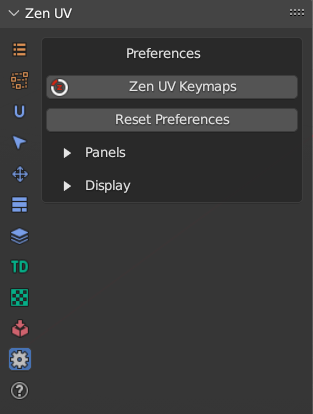
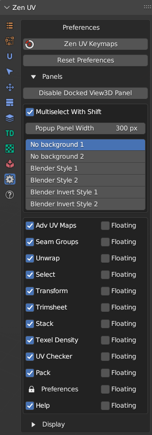
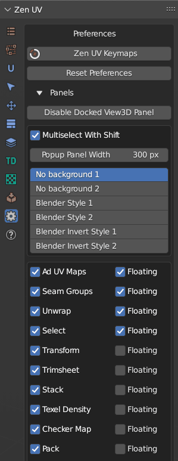
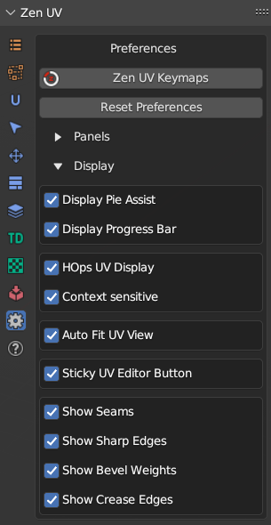

Preferences
Panel

 Zen UV Keymaps
Zen UV Keymaps
Set Shortcuts for Zen UV Menus.
Reset Preferences
Reset Zen UV Preferences to the Default state.
Panels
Subpanel

Disable Docked View3D Panel
Disable Compact UI.

Multiselect With Shift
Set Active Panels with holding Shift hotkey.
Popup Panel Width
Set Popup menu Shift + U width.
Panels Icon Style
Chane Ison Style. If you don’t see active panel icons with your current Blender color theme you can change the icon style.

Disabling Panels
Enable Add-on Panels. You can use these checkboxes disable some panels if you don’t use them.

Floating Panels
Show Panel as a separate Panel. If you like old style menu make all the panels Floating.

Display
Subpanel

Display Pie Assist
Display hints for Pie menu.
Display Progress Bar

Progress Bar is designed to display the progress of the operator execution process. Not all operators use the Progress Bar, only those that require complex calculations. On some operating systems of the Linux family, the Progress Bar can cause Blender to crash. To avoid this situation, you can disable the Progress Bar in Panel - Preferences - Display Progress Bar.

HOps UV Display
Display UV trasnforms in 3D View using Hard Ops addon.

Context-sensitive
Enable HOps UV Display if UV Editor is open.
Auto Fit UV View
Automatically Fit and Zoom UV viewport.
Sticky UV Editor Button
Enable Sticky UV Editor button.
Show Seams
Display UV Seams in 3D Viewport.
Show Sharp Edges
Display Sharp edges in 3D Viewport. It can be overlapped by Seams/Bevel Weights/Crease Edges display.
Show Bevel Weights
Display Sharp edges in 3D Viewport. It can be overlapped by Seams/Bevel Weights/Crease Edges display.
Show Crease Edges
Display crease edges created for the Subdivision modifier in 3D Viewport. It can be overlapped by Seams/Bevel Weights display.